Borrow & Never Give Back

Borrow & Never Give Back is a project of unapologetic appropriation. It starts with a question: what forms of language do we overlook or discard? Job descriptions, spam texts, LinkedIn bios, art reviews, Twitter threats - these become the raw material. Each piece borrows a form and never gives it back. In doing so, it reclaims a slur often used against migrants and refugees, “they steal our jobs and never return home”, and retools it as a literary method.
The title isn’t just a metaphor. It’s a technique. The work dumpster-dives through digital culture’s linguistic junkyard, excavating texts not meant to be read slowly or lovingly. It collages, distorts, and re-performs the language of empire: the smooth corporate quote, the manipulative email, the seductive ad. Every cut is a resistance. Every reassembly, a new tongue.
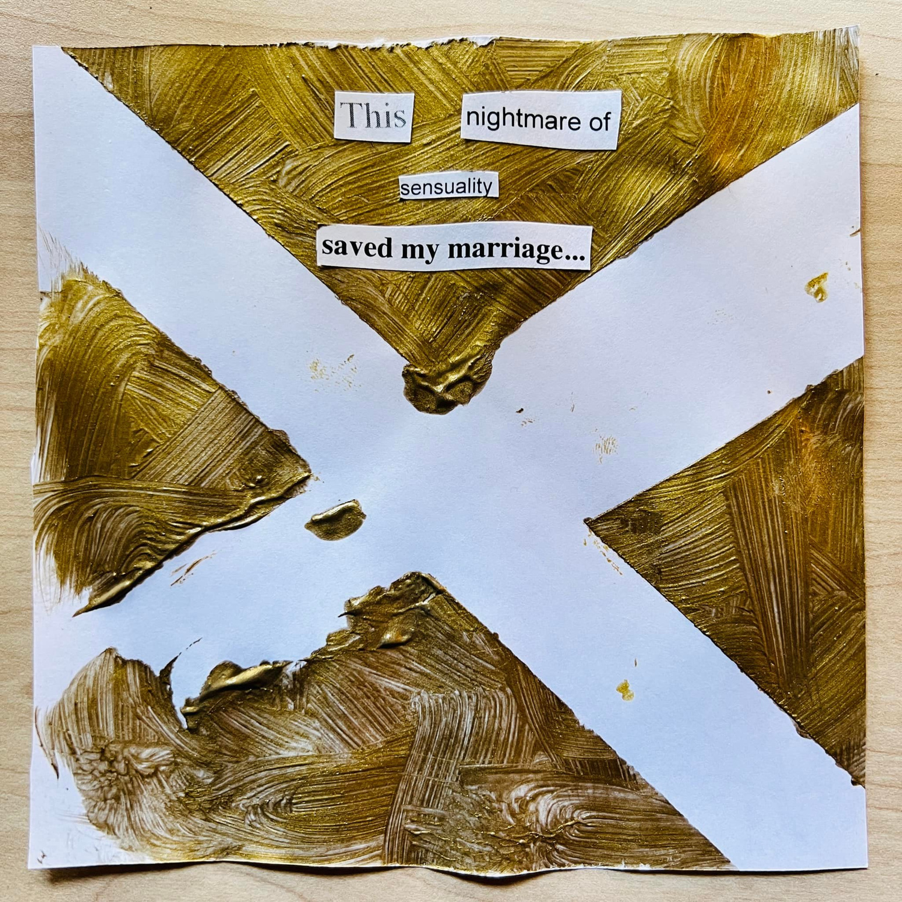
Visually, the project manifested in gallery installations and online shows. One piece, Hey you, was featured in Art and Cake’s virtual exhibition. Other works were installed at Silo Gallery in Santa Barbara. Creating each one meant literally printing out scam emails, cutting them up, collaging them by hand. The process felt invasive, in the best way. I was invading the invading language.
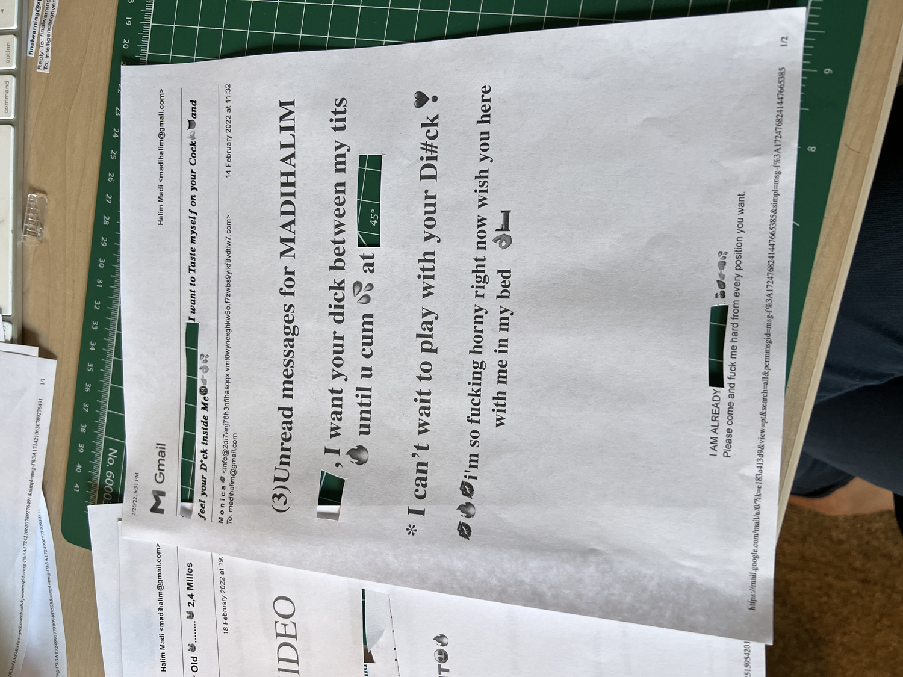
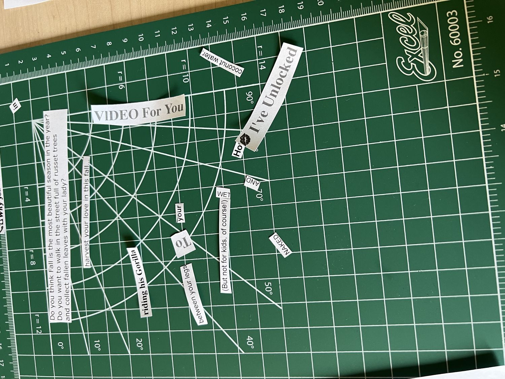
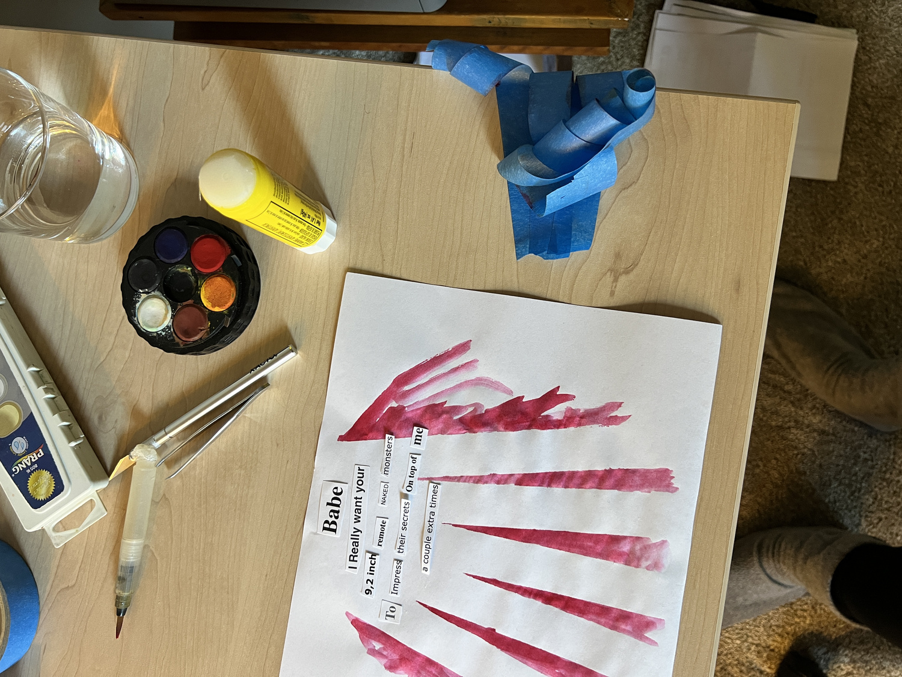
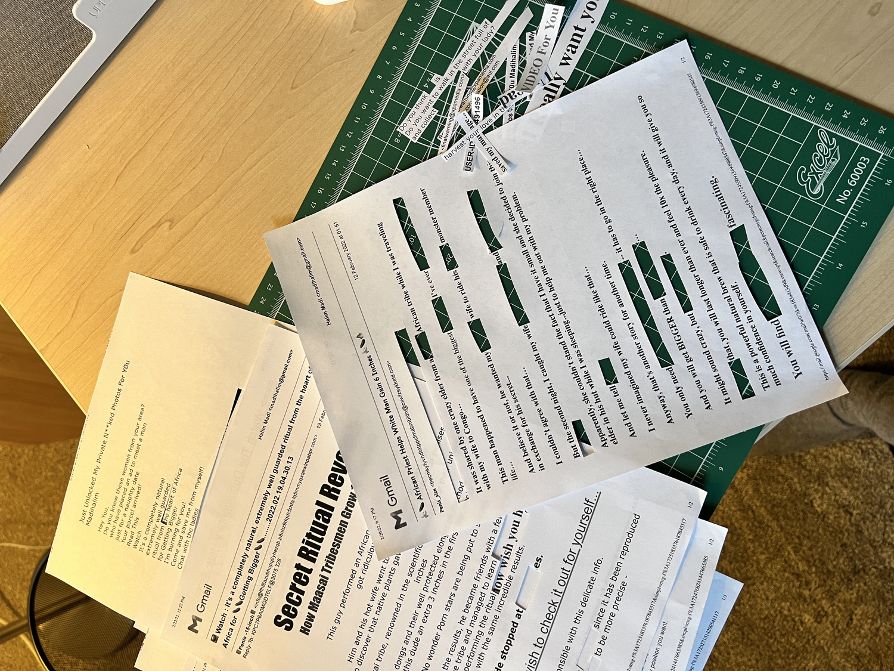
“Babe, I really want your 112,000 9.2 inch NAKED monsters to impress on me their secrets a couple extra times.”
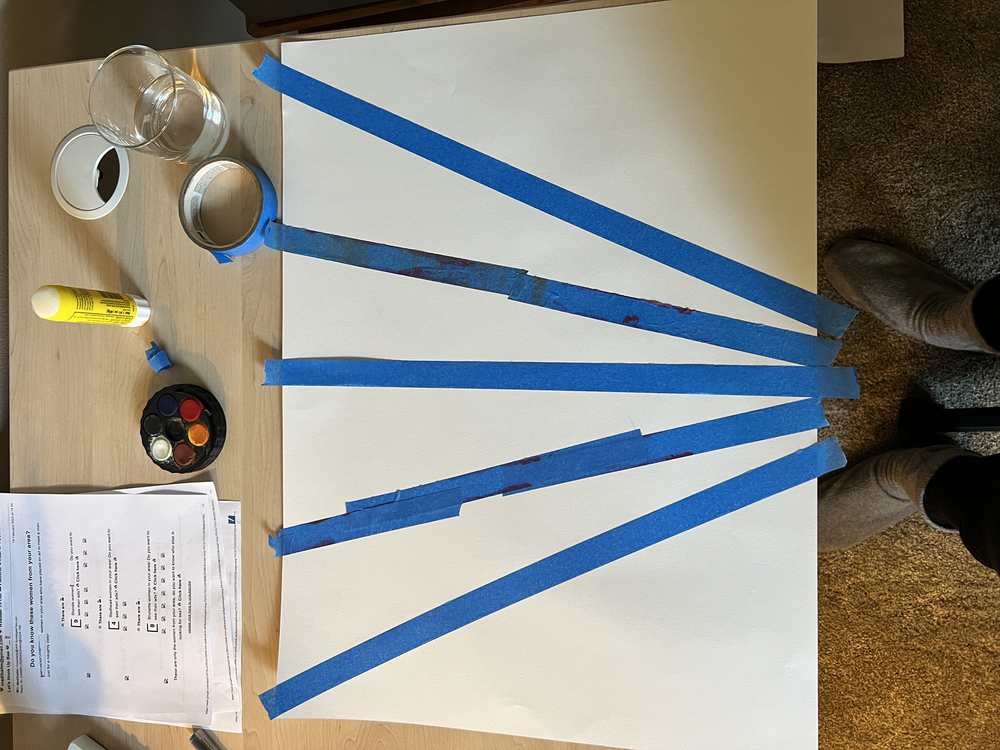
This isn’t satire. It’s reverence. It’s what happens when you treat discarded language as sacred, when you give spam the dignity of poetry. The results are absurd, perverse, and unexpectedly tender.
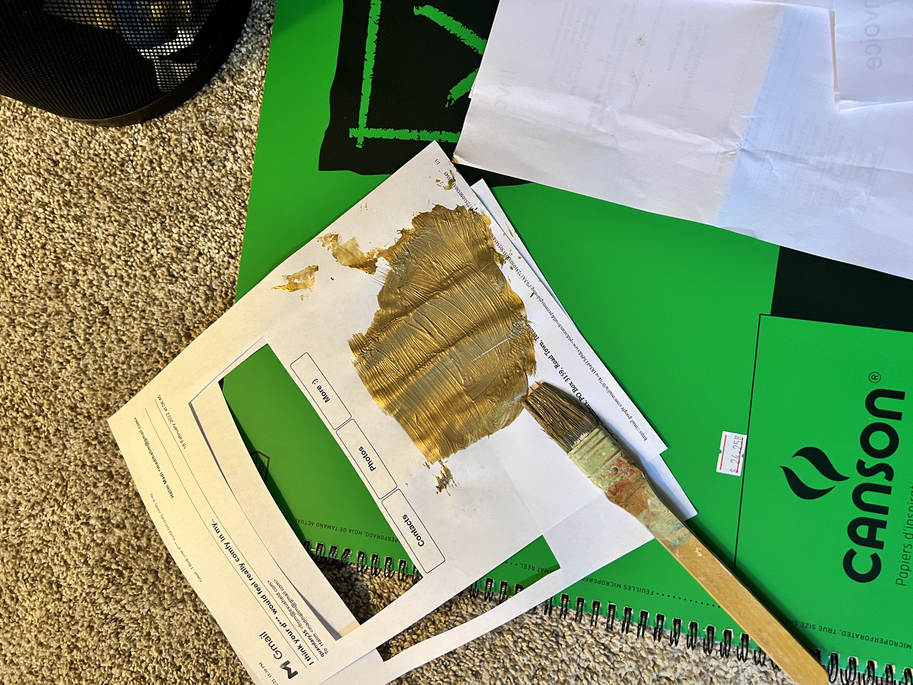
At its core, Borrow & Never Give Back is about authorship as remix. It aligns itself with traditions of plagiarism-as-art: from Kathy Acker to Kenneth Goldsmith, from Frankenstein to memes. It rejects originality as a myth, choosing instead to pervert existing structures. The poet here is not a genius but a thief. Not a maker, but a forager. Not a nationalist, but a scavenger.
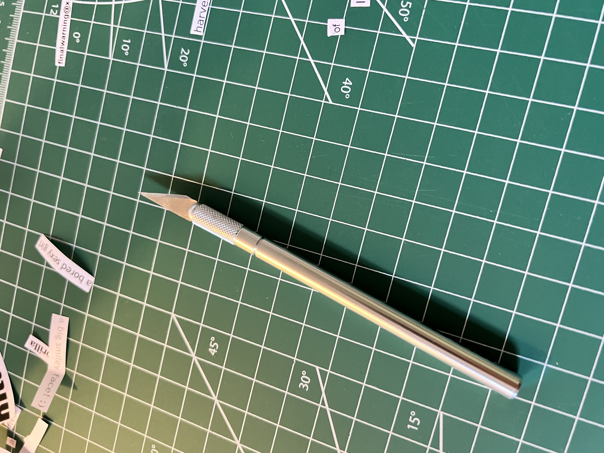
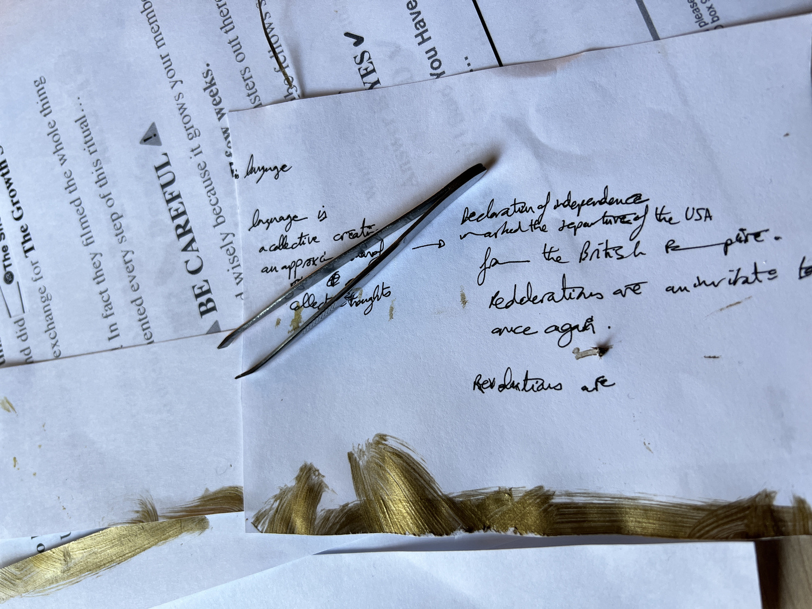
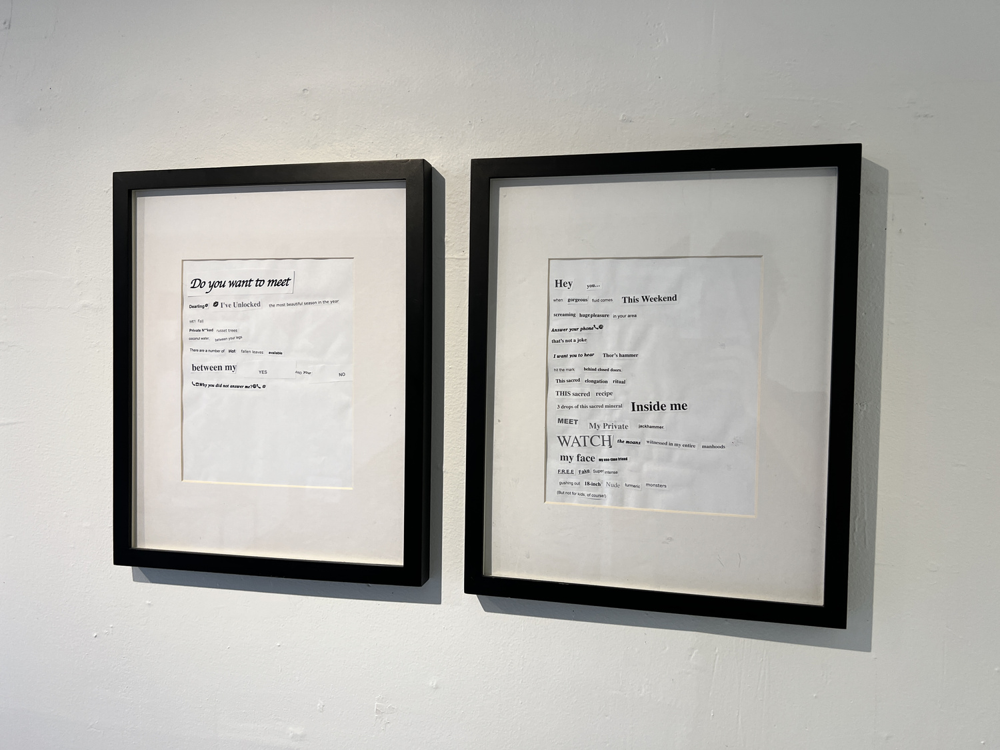
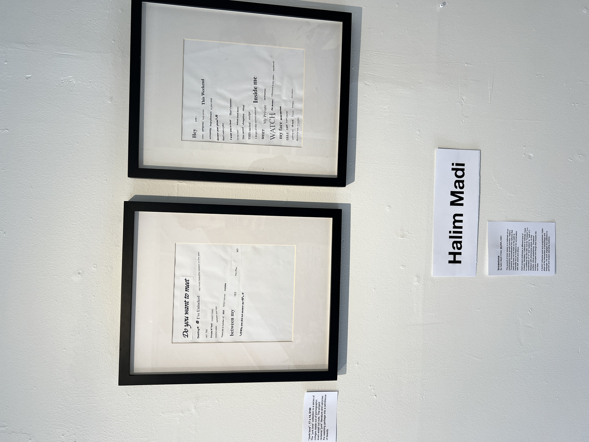